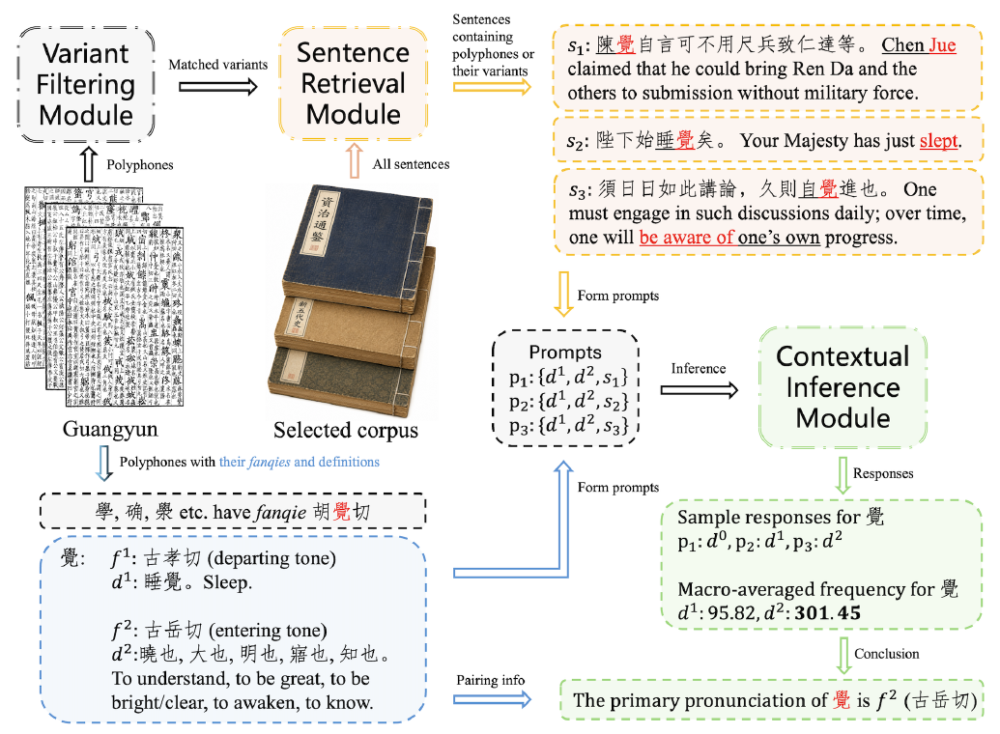

研究方向 03 · 音韵数智研究
从反切歧义到可追踪的古音证据
历史音韵研究需要连接字书中的注音关系与实际文献中的语言使用。以《广韵》和宋代多体裁语料为对象，我们研究多音反切字的常读音推断，并将其组织为可检验的主路径。
01
研究背景：反切关系中的继承性歧义
反切以两个字为一个字注音：上字提供声母，下字提供韵母与声调。当反切用字本身有多个读音时，其选择会影响下游字的注音，形成继承性歧义。本研究以《广韵》与宋代书面语料为对象。
这一问题要求研究从单个字的读音辨析，进一步走向注音关系之间的系统考察：哪些读音选择具有文本依据，这些选择又如何改变下游路径。
02
证据扩展：从字书内部到宋代语境
《广韵》提供释义与反切之间的对应关系，但字书结构并不总能独立确定多音字的常用读法。研究因此引入宋代多体裁语料，从实际使用语境中比较候选释义的分布。
综合史籍与不同类型经典文本共同构成证据来源。按体裁组织语料，有助于识别专业领域或文体差异，避免将某类文本中的高频用法直接等同于整体常读音。
03
推断过程：语境释义与反切主路径
QYSPD 将异体过滤、语句检索和语境释义推断连接起来。语言模型在候选释义之间进行语境判断，再通过字书中的释义—反切关系推断主反切，保留从文本证据到读音选择的联系。
主反切进一步被组织为上字与下字网络中的主路径，使原本分叉的关系能够得到明确呈现。跨体裁的后验优势分析与模型敏感性分析，则用于考察推断的支持程度与稳定性。

04
解释边界：统计支持与历史结论之间
主反切的后验优势反映模型释义计数中的相对支持，并不等于与人工真值比较的准确率。模型之间的一致性也应作为稳定性证据理解，而不能替代文献论证。
当前结论限定于《广韵》体系与所采集的宋代书面语料。释义碰撞和稀见字仍需要更多字书、文献与音韵证据补充，这也构成进一步开展跨时期研究的起点。
05